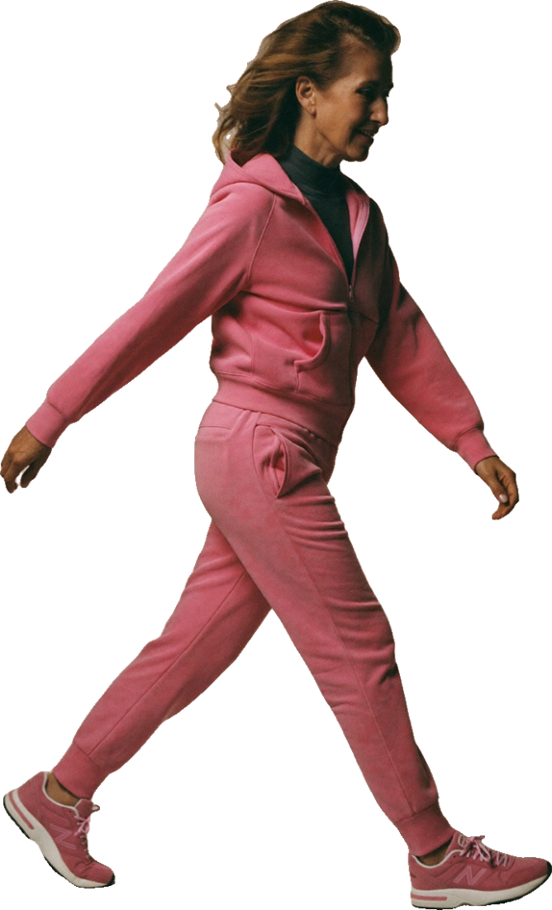

La natural es la más frecuente, pero no la única. Saber cuál es la tuya cambia qué vigilar y qué preguntar.

tu camino
A
Natural
Los ovarios bajan su actividad poco a poco. La mayoría la vive entre los 45 y 55.
B
Temprana o prematura
Antes de los 45 o de los 40 (insuficiencia ovárica prematura, IOP). Más riesgo cardiovascular y de osteoporosis.
C
Quirúrgica
Si se extraen ambos ovarios. El cambio es inmediato y suele traer más síntomas. Pide un plan antes de la cirugía.
D
Por tratamientos
Quimio, radioterapia o algunos medicamentos. Tu equipo de oncología debe estar en la conversación.
~4%
con IOP (antes de los 40)
~12%
con menopausia temprana (40–45)
Estimaciones de una revisión de 2026. La serie de The Lancet (2024) habla de cerca del 10% para ambas juntas: las cifras varían según el estudio.
Fuentes: OMS, oct. 2024; Jean Hailes for Women’s Health, «Causes of menopause»; revisión sobre IOP, Australian Journal of General Practice, abr. 2026 (guía ESHRE/ASRM/IMS 2024).
¿Te pasa antes de los 45? Pregunta:
¿Qué estudios necesito para confirmar la causa?
¿Me conviene terapia hormonal hasta la edad habitual de la menopausia?*
¿Cómo cuidamos mis huesos y mi corazón desde ahora?
¿Con quién hablo del impacto emocional o la fertilidad?
*La guía internacional de 2024 recomienda terapia hormonal en la IOP salvo contraindicación, hasta cerca de los 51 años. ¿Sin útero pero con ovarios? Lleva un diario de síntomas 3 meses (Jean Hailes).